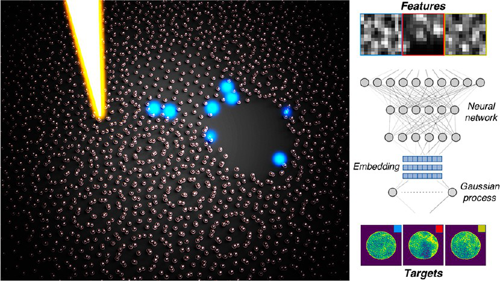
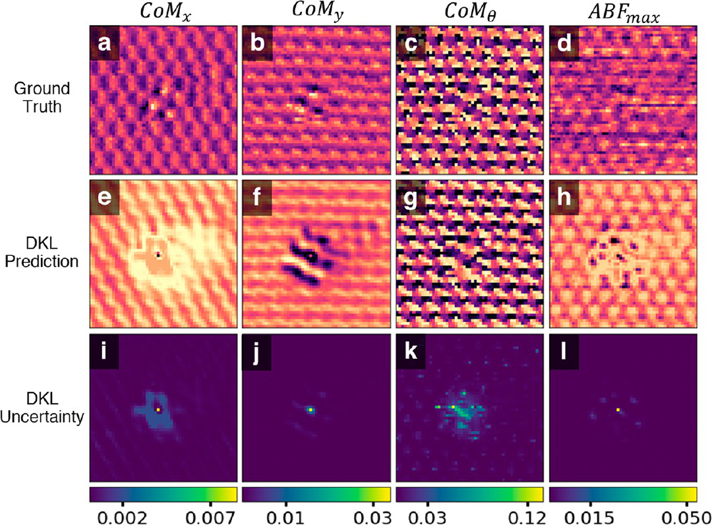
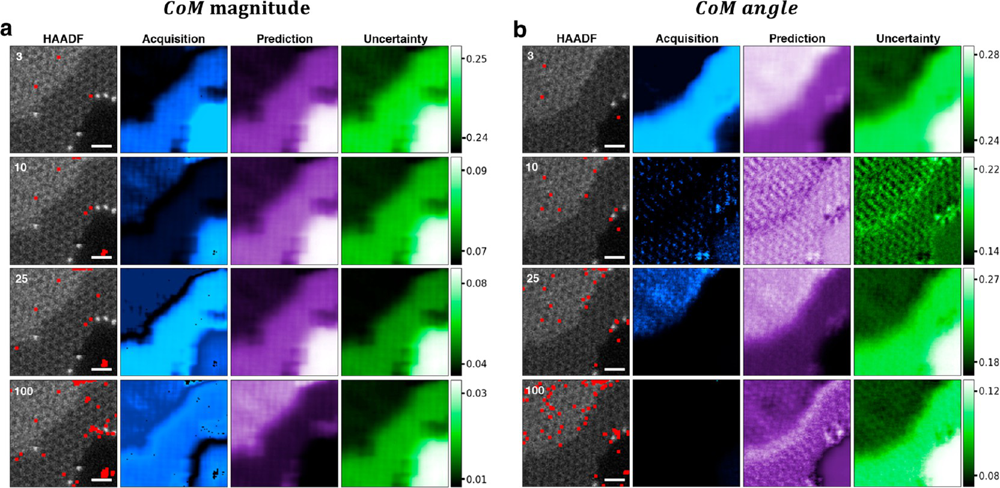

We have already covered
Today we see both in action inside the microscope.
\[\begin{equation} \operatorname{EI}(\mathbf{x}) = \big(\mu(\mathbf{x}) - y^{+} - \xi\big)\,\Phi\!\left(\dfrac{\mu(\mathbf{x})-y^{+}-\xi}{\sigma(\mathbf{x})}\right) + \sigma(\mathbf{x})\,\phi\!\left(\dfrac{\mu(\mathbf{x})-y^{+}-\xi}{\sigma(\mathbf{x})}\right) \end{equation}\]

Figure 1: DKL workflow for 4D-STEM: learning (a), prediction (b), and measurement (c). Features are HAADF-STEM image patches; targets are scalarized diffraction patterns from patch centers.
Key idea
CNN‑based embedding → GP kernel → BO acquisition

Two 4D datasets demonstrate the approach:
Intelligent sampling reduces beam damage through:

Tip
DKL recovers CoM‑magnitude map with nanometre detail from <1 % of pixels → 30‑fold dose reduction
Nanobeam electron diffraction (NBED) approach:
Note
Key insight: DKL learns to measure near boundaries where strain is highest, even without prior knowledge of material structure
DKL active learning on MnPS3 with DPC CoM scalarizer. Shows exploration pathway, predictions, and uncertainty at key steps. Periodic interference from sulfur vacancy generation. Scale bars: 5 and 2 nm.
MnPS₃ beam-sensitive material:
DKL autonomous exploration:
Tip
Key insight: DKL discovers ordered vacancy superstructures while protecting beam-sensitive specimens
Active learning for 4D-STEM imaging:
Future opportunities:
Note
Key insight: Active learning transforms 4D-STEM into an autonomous discovery platform for quantum materials research